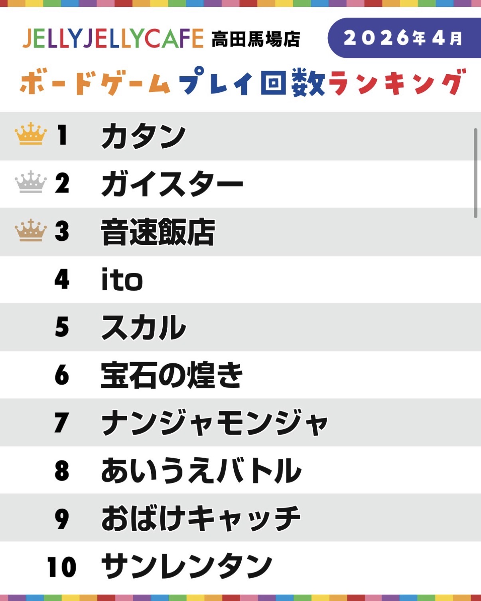
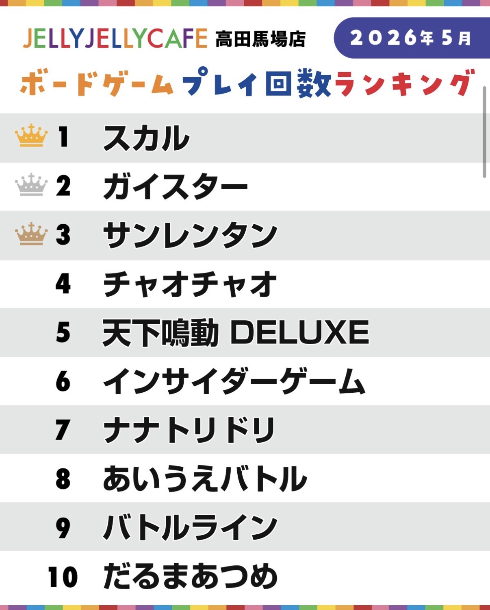
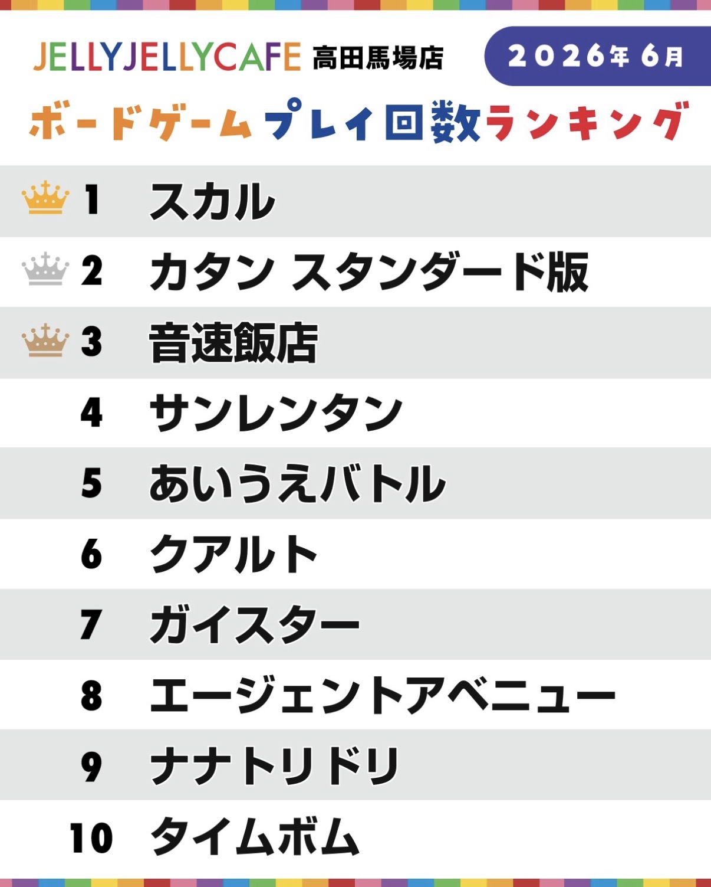
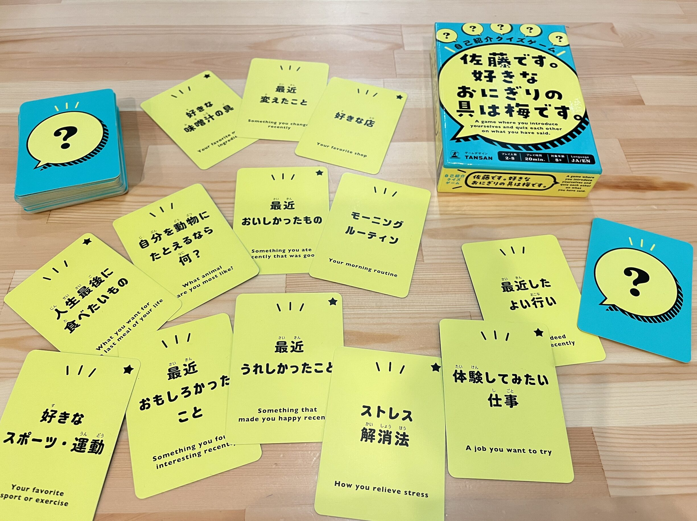
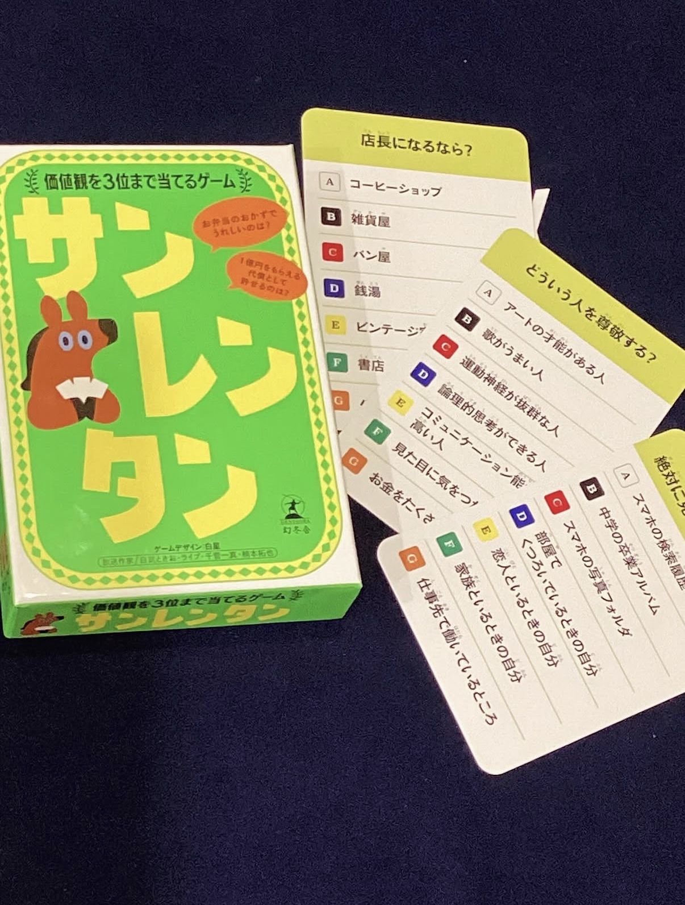

そこで小川さんに人気のゲームを紹介してもらいました。
以下がゲームプレイ回数ランキング（公式Instagramより）。

やはり新歓時期は定番のゲームが人気でした。


「スカル」「ブロックス」など、3〜4人プレイのゲームが人気で、チームで楽しむことが多い。
JELLY JELLY CAFE 店長の小川直人さんおすすめ↓


どちらのゲームも初対面同士でも楽しめるようなコミュニケーションゲーム